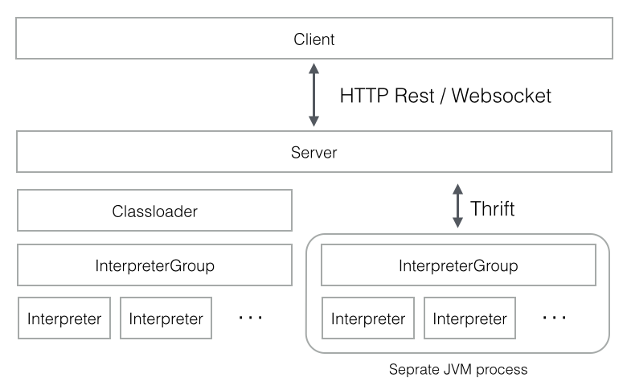

Zeppelin Interpreter is a language backend. For example to use scala code in Zeppelin, you need scala interpreter. Every Interpreter belongs to an InterpreterGroup. InterpreterGroup is a unit of start/stop interpreter. Interpreters in the same InterpreterGroup can reference each other. For example, SparkSqlInterpreter can reference SparkInterpreter to get SparkContext from it while they're in the same group.

Interpreter can be launched either using separate classloader or separate JVM process. Sometimes separate classloader causes problem especially when your interpreter uses reflections or trying to grab standard out/err. In this case, separate JVM process is the option you can select. (by checking 'fork' in Interpreter menu, which is default value) When Interpreter is running in separate JVM process, it's communicating with Zeppelin via thrift.
Creating a new interpreter is quite simple. Just extend org.apache.zeppelin.interpreter abstract class and implement some methods.
You can include org.apache.zeppelin:zeppelin-interpreter:[VERSION] artifact in your build system.
Once you have build your interpreter, you can place your interpreter under directory with all the dependencies.
[ZEPPELIN_HOME]/interpreter/[INTERPRETER_NAME]/
You can configure zeppelin.interpreters property in conf/zeppelin-site.xml Property value is comma separated [INTERPRETERCLASSNAME]
for example,
<property>
<name>zeppelin.interpreters</name>
<value>org.apache.zeppelin.spark.SparkInterpreter,org.apache.zeppelin.spark.PySparkInterpreter,org.apache.zeppelin.spark.SparkSqlInterpreter,org.apache.zeppelin.spark.DepInterpreter,org.apache.zeppelin.markdown.Markdown,org.apache.zeppelin.shell.ShellInterpreter,org.apache.zeppelin.hive.HiveInterpreter,com.me.MyNewInterpreter</value>
</property>
Inside of a notebook, %[INTERPRETER_NAME] directive will call your interpreter. Note that the first interpreter configuration in zeppelin.interpreters will be the default one.
for example
%myintp
val a = "My interpreter"
println(a)
Check some interpreters shipped by default.